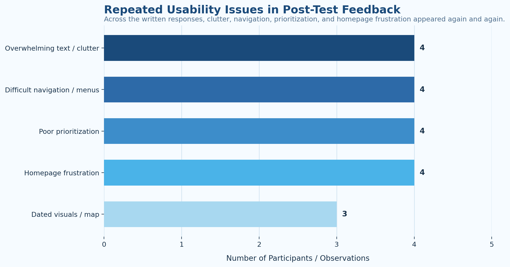
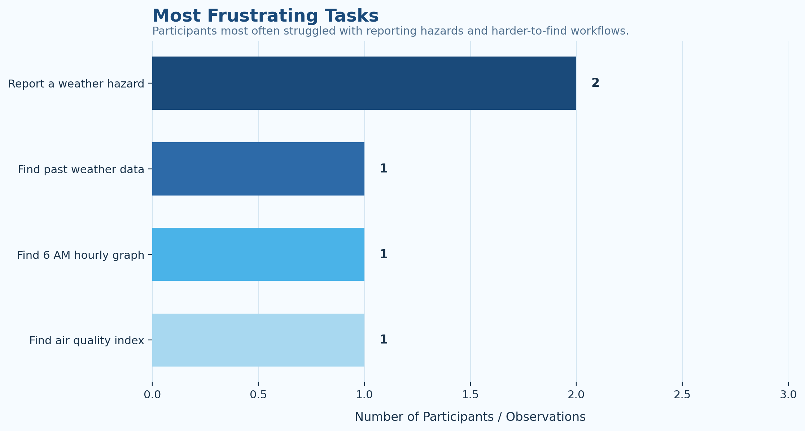
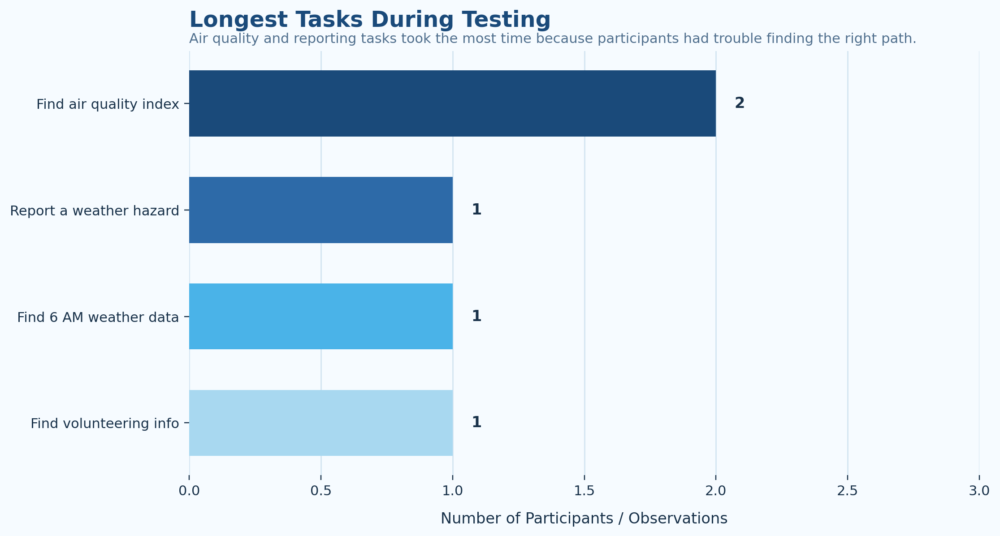
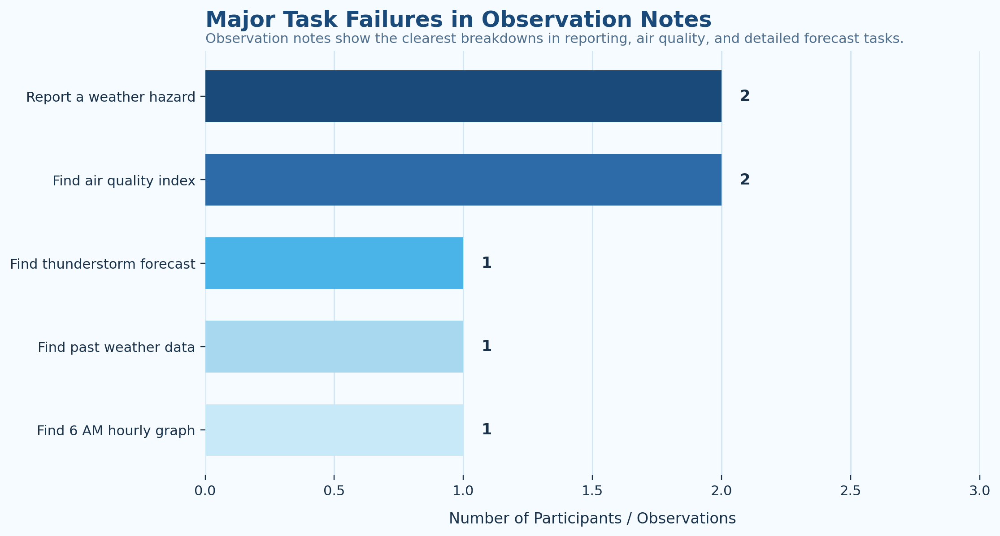

Data & Analysis
Methodology, usability findings, and data-driven analysis behind our redesign decisions.
Methodology
Study Overview
In order to find out where the National Weather Service struggles in design features the most, our team conducted usability tests on five consenting participants. Our team formulated a series of tasks carried to the participants to complete during a brief interview-styled meeting either virtually or in-person.
Pre-Test Questionnaire
During each usability test, participants were first asked to fill a pre-test questionnaire describing themselves, their background in technology, their preferred weather information service if applicable, and in what circumstances they would check the weather for.
Tasks
Then, participants were tasked to complete the following objectives:
- Check the thunderstorm forecast information for Georgia.
- Find out what city has the hottest temperature in Georgia currently.
- Let's say you want to find out how safe the air quality is in Middlesex county, NJ. Find the Air Quality Index for this area.
- Find historic weather data in Atlanta during December of 2025.
- Say you are a student looking for volunteer opportunities with the National Weather Service. Find out where you can get information about volunteering.
- Imagine you notice a severe thunderstorm hazard in your area that you do not see represented on weather.gov. Find a way to report this to the National Weather Service.
- You want to go on an early morning run. Find the Hourly Weather Forecast Graph for Atlanta, GA at 6 AM the following day.
Each team member took careful note of each participant's process to complete the tasks, if they were able to complete the task. The purpose of designing these tasks specifically is that they were able to be completed through multiple ways of navigation, so we wanted to learn what the popular method was when first approaching the website.
Post-Test Questionnaire
Once the tasks were complete, participants were asked to fill out a post-test questionnaire, essentially reflecting on what they found difficult, what they found easy, what they enjoyed, what they found frustrating, and their overall thoughts of the website's structure and aesthetic. We also took vital notes on what they would want changed during the feedback.
Findings
Usability Issue 1: Dense text and visual clutter made the site difficult to scan
Participants consistently reported being overwhelmed by the amount of text presented to them during their navigation of the National Weather Service Website. Each participant mentioned difficulty processing the dense information displayed on the website, especially on the forecast page. For example, Participant 3 noted that the forecast page contained an “infinite amount of text,” and participant 2 talked about spending “a long time scanning pages rather than finding the information clearly.” The transcript notes also showed that some participants were not really navigating naturally, but instead were scanning, brute forcing menus, or even trying shortcuts like Command + F just to locate what they needed. In addition to increasing cognitive load, this excessive text often resulted in users spending more time looking at irrelevant or duplicate content, reducing efficiency and making it harder to quickly locate the information they needed.

Usability Issue 2: The homepage did not show the information users expected first
The home page of the website was a source of frustration, as the participants did not think it contained the appropriate information. The home page of the website consists of national weather alerts and contains a map of the entire United States, with regions colored to display any alerts that may be present in each area. While participants were able to recognize the importance of the information on the home page, they felt that it should be placed elsewhere. Participant 1 stated “as someone who is not in all places at once, [the map] is not super useful,” while Participant 2 plainly stated that the “home page should be completely redesigned” in favor of more relevant information. Participants 3 and 4 both complained about the map itself and its accessibility, stating that users must “zoom in to see what the map is about” and emphasizing that the legend for the map is not sorted. As the home page is the first page a user sees when visiting a website, it should contain the most relevant information for the general user rather than immediately forcing them into a national level view.
Usability Issue 3: Important information was poorly prioritized
Participants found that the majority of important information was difficult to find, and they were frequently faced with irrelevant information due to poor prioritization. The most important information for a day-to-day user was buried within menus or shown alongside less relevant information. Participant 1 stated that “information should be prioritized more efficiently,” noting “temperatures, precipitation, and daily forecast” as valuable information that was difficult to access. Participant 2 had frustrations with the fact that all options were presented at once in dropdown menus, mentioning that “some [options] are 100 times more likely to be used.” This lack of prioritization affects users’ ability to quickly make use of the site, leading them to spend more time looking for the information that they need. Our task notes supported this as well, since simpler everyday tasks like air quality, current conditions, and reporting hazards caused more confusion than less common tasks like volunteering.

Usability Issue 4: Location-specific and reporting workflows were hard to discover
Participants also struggled with workflows that should have been straightforward, especially when trying to locate location-specific information or report something to the website. The clearest examples of this were the air quality task, the reporting task, and the hourly forecast graph task. Multiple participants either failed these tasks completely or only reached the correct area after taking a very indirect route. In our task sheet, reporting a hazard was listed as the most frustrating task by multiple participants, while air quality was listed more than once as the longest task. In the post-test responses, Participant 4 specifically said that finding the air quality was frustrating because it took them to an external site, and transcript notes showed that participants often expected a much more obvious way to report weather events. This shows that even when the website technically contains the information, the path to it is often unclear.


Usability Issue 5: The interface felt dated and overly technical
Finally, participants felt that the interface itself looked dated and was difficult to interpret quickly. Several users commented not just on the amount of information, but on how old, cluttered, or overly technical the website felt. Participant 4 described the layout and infographics as dated, while Participant 3 said that the site felt “very 20th century-esque.” This was especially noticeable in places like the hourly weather graph, where participants sometimes reached the correct page but still had trouble understanding what they were looking at. Instead of helping users confidently interpret the data, the design often made the information feel more intimidating than useful.
Participant Quotes
Direct quotes from usability test participants highlighting frustration or confusion with Weather.gov.
| # | Participant | Task | Quote | Usability Issue |
|---|---|---|---|---|
| 1 | Participant 2 | General navigation | A lot to look at, not very linear, spent a long time scanning pages rather than finding the information clearly. | Text overload and weak visual hierarchy |
| 2 | Participant 3 | Homepage | I had no idea what any of it meant, you have to zoom into the colored boxes to even understand what the map is about. | Homepage map confusion |
| 3 | Participant 4 | Air quality | Finding the air quality, didn’t know where it was in the website itself as it took the user to an external site. | Hidden location-based workflow |
| 4 | Participant 1 | Prioritization | Information should be prioritized more efficiently (temperatures, precipitation, daily forecast). | Poor prioritization of common tasks |
| 5 | Participant 3 | Reporting and navigation | Things like ‘report weather events’ should be very easily accessible, and everyday tasks like ‘check temperature right now in my city’ should be easier to access than ‘check weather from 7 years ago,’ whereas both share equal priority. | Important workflows buried under equal-weight navigation |
Analysis
Interpretation of Issue 1
The findings from our usability testing directly support the changes made in our redesign. Since participants repeatedly said that the website felt cluttered and overwhelming, one of the biggest goals of our redesign was to reduce cognitive load and make the most important information easier to scan. This is why our design uses stronger spacing, clearer visual hierarchy, and more intentional placement of information. Rather than forcing users to sort through large amounts of text, the redesign guides their attention toward the information they are most likely to need first.
Interpretation of Issue 2
The frustration with the homepage also clearly justifies the redesigned home screen. Participants understood that national alerts are important, but they did not think that this information should dominate the very first page they see. Most users expected local weather information, current conditions, or daily forecast details to be more immediately visible. Because of this, our redesign keeps the national alert map available, but moves it lower on the page and places location-based forecast information first. This better aligns the page with what everyday users actually come to the site to do.
Interpretation of Issue 3
Our findings also support the decision to simplify navigation and make the current page more obvious. Many participants took very indirect paths through the website, repeatedly searching, opening the wrong section, or failing to recognize when they had already reached the correct page. This suggests that the issue is not just too much information, but also weak guidance. In response, our redesign introduces a clearer navigation system with more obvious labels and stronger page-state indicators so users can tell where they are and where they should go next.
Interpretation of Issue 4
The redesign’s emphasis on prioritization is also strongly supported by the testing. Participants repeatedly pointed out that highly relevant tasks such as checking temperature, finding precipitation, locating hourly weather, or reporting hazards should be easier to access than less common or more archival information. Our redesign responds to this by surfacing common actions earlier and organizing the interface around what a general user is most likely to need. This does not remove deeper weather data from the site, but it does make the site more efficient and approachable for first-time or casual users.
Overall Analysis
Finally, the changes to the map, hourly forecast views, and location-based workflows are justified by the confusion users experienced with air quality, reporting, and graph interpretation. In several cases, participants either failed to complete these tasks or only completed them after a long and confusing process. This indicates that the redesign needs to improve not only appearance, but also discoverability and clarity. By making local information easier to reach, using a more interactive and readable interface, and reducing technical clutter, the redesign better supports both confidence and efficiency for the user.